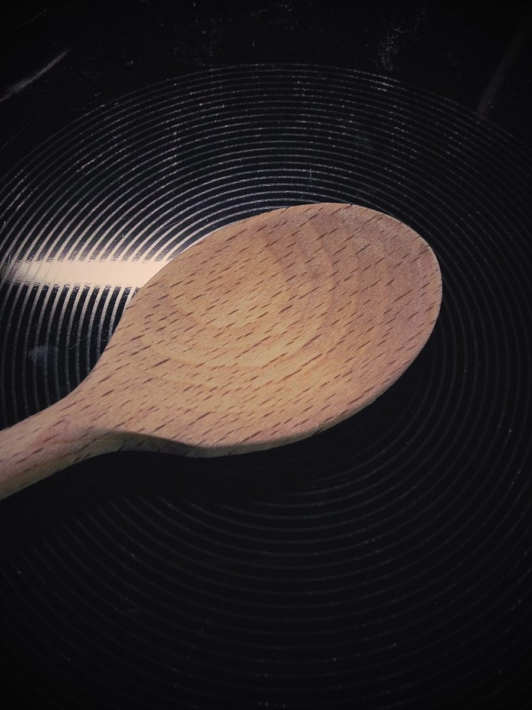
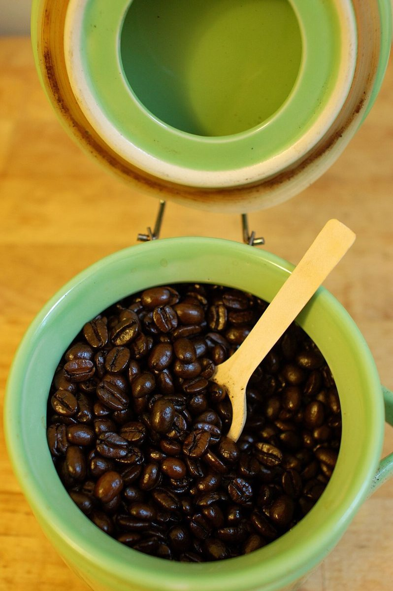
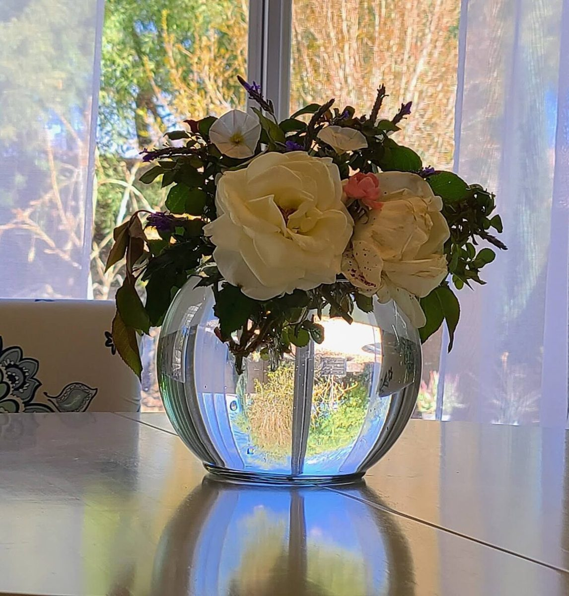

よっつめの箱
店のこと
お店について確認できているのは、所在地とInstagramのアカウントだけです。
「想像してみる」部分は制作側の想像で、お店の様子・考え・メニューとは関係ありません。
第1層確認できていること
確認できていること
- 店名は「Madre」、業種はカフェ
- 所在地は岩手県花巻市大通1丁目9-27(〒025-0092)
- 電話番号はなし。連絡はInstagramから
第2層想像してみる
想像してみる
Madreという名前から、制作側は「大きな箱の中に小さな箱が入る」入れ子の人形を連想し、このサイトの形にしました。お店の由来とは関係がありません。
第3層準備中
これから載せたいこと
お店の考え、メニュー、営業時間は、貴店からいただく情報で書き直します。


